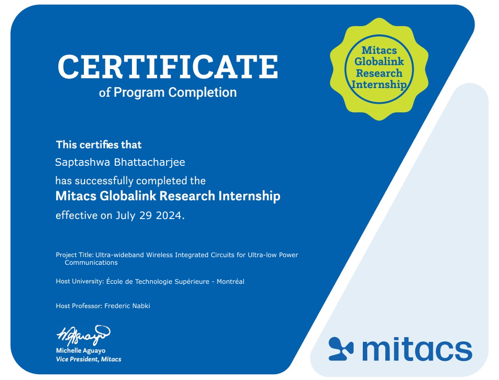
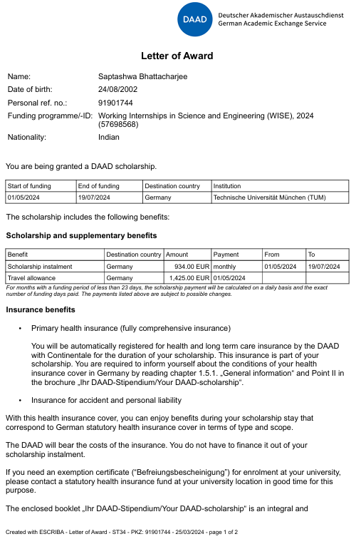
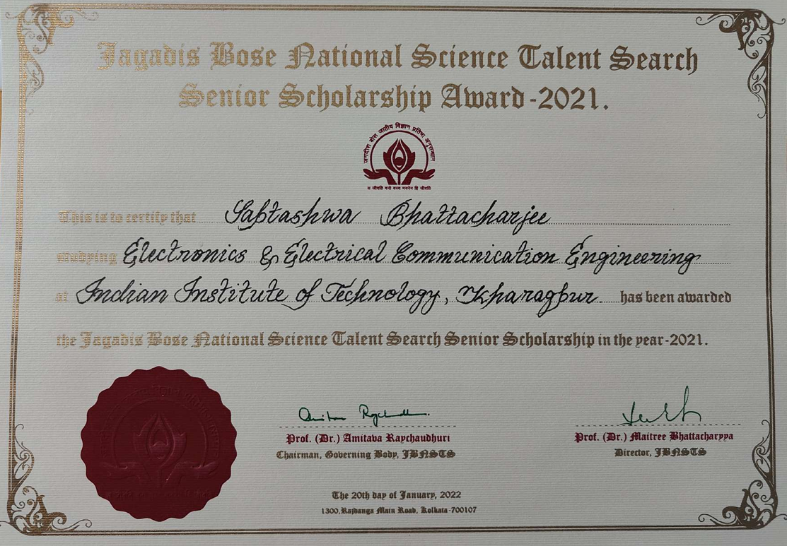
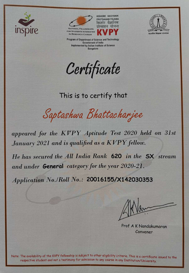

Mitacs Globalink Research Internship 2024
I was selected by Mitacs and Professor Frederic Nabki from École de Technologie Supérieure to
receive the 2024 Globalink Research Internship award.
-
University/Institution: École de Technologie Supérieure Montréal
-
Host professor: Dr. Frederic Nabki
-
Research project title: Ultra-wideband Wireless Integrated Circuits for Ultra-low Power Communications
-
Research description:
This research focuses on the design of an ultra wideband (UWB) transceiver for use in
an innovative wireless communication system for wireless sensors including active RFID tags, environmental
sensors, positioning sensors, wireless headsets or smart phones. Given the small amount of energy
available in the batteries of these devices and the importance of their autonomy, it is essential to
minimize the energy consumption of wireless transceivers needed in these applications. In order to
attain this goal, ultra-wideband technology has the potential to significantly reduce the energy
consumption of transceivers in comparison to what is possible with traditional architectures. That
said, the design of an ultra wideband transceiver that allows continuous operation while dissipating
energy ten times lower than the state of the art is a challenge that requires a sound architecture. The project goal
is to develop innovative integrated circuits for use in a UWB transceiver architecture and design printed circuit boards
for the testing of existing innovative circuits introduced by our group.
-
Duration of research: 12 weeks [06.05.2024 - 26.07.2024]
-
Scholarship amount: 9000 CAD
|
 |
DAAD WISE Scholarship 2024
|
 |
I received the DAAD WISE Scholarship in 2024 for carrying out a fully funded summer
internship at the Technical University of Munich.
-
University/Institution: Technische Universität München (TU Munich)
-
Host professor: Dr.-Ing. Ralf Brederlow (Chair of Circuit Design, TU Munich) and Dipl.-lng. Markus Dietl
-
Research project title: High Bandwidth fractional PLL for RF systems
-
Research description:
Fractional PLLs normally have relatively low bandwidths to avoid reference spurs.
The reason for this is that the average frequency is achieved by switching between whole numbered dividers.
In this internship we shall explore means to keep reference spurs low while maintaining a high PLL bandwdith
to cut VCO noise. This idea should be realised in an optimal fashion based on the modelling. Additionally, the behaviour
of high frequency PLLs are very often strongly influenced by the microchip layout. The effect of parasitic resistance, capacitance,
and inductance obtained after post-layout extraction will be investigated. Our study will consider most of the parasitic effects
of the layout. The differences to a simulation only considering the schematic should be understood and the effect to the
parameters of the modelling should be realized.
-
Duration of research: 01.05.2024 - 19.07.2024
-
Scholarship amount: 934 €/month and 1425 € as travel allowance
* Although selected for the DAAD WISE program, I did not perform the summer
internship at Technische Universität München owing to an alternate oppurtunity at École de Technologie Supérieure Montréal through
the Mitacs program.
|
Jagadis Bose National Science Talent Search (JBNSTS) Senior Scholarship 2021
I am a recipient of the JBNSTS Senior Scholarship 2021. The selection process was a two round
screening that involved a pen-paper examination followed by an interview. Thereby, I am now a JBNSTS Senior Scholar.
-
University/Institution: Jagadis Bose National Science Talent Search (JBNSTS)
-
Description:
The Senior Scholarship program of JBNSTS is the core program that has been functioning
since the birth of the institution in 1958. Originally, just a scholarship providing scheme, it has expanded
to a holistic pedagogic ideology for the development of creative students of science. This has been made possible
by systematic research on educational needs of gifted individuals.
This scheme caters to the development of creative undergraduate students studying Basic Sciences, Engineering &
Medicine in registered institutions of West Bengal. It aims to the conservation of scientific talent and the nation's
need for science and technology personnel can be met.
The motivational program for this group involves exposures to the field of creative thinking through contact programs
with creative minds. The nurture and enrichment programs involve educational tours, entitlement to other scholarships,
seminar programs and project work in groups.
[From the website of the Jagadis Bose National Science
Talent Search (JBNSTS).]
-
Duration of fellowship:
2021-2025 [For the course of study of Bachelor of Technology at
the Indian Institute of Technology Kharagpur.]
-
Scholarship amount: INR 4000/month with INR 5000 annual book grant
|
 |
Kishore Vaigyanik Protsahan Yojana (KVPY) Fellowship 2021
|  |
I secured an All India Rank of 620 in the KVPY 2021 [SX Stream]. I am now a KVPY Fellow.
-
University/Institution: Indian Institute of Science (IISc)
-
Description:
The Kishore Vaigyanik Protsahan Yojana (KVPY) is a National Program of
Fellowship in Basic Sciences which is initiated and funded by the Department of Science and Technology,
Government of India, to attract exceptionally motivated students for pursuing basic science courses and
research career in science. The programme has the following objectives a) identify students with talent
and aptitude for research b) help them realize their academic potential c) encourage them to take up
research careers in Science, and d) ensure the growth of the best scientific minds for research and
development in the country. Special groups / Committees are set up at IISc to screen the applications and
conduct an aptitude test at various centres in the country. Based on the performance in the test,
short-listed students are called for an interview which is the final stage of the selection procedure.
For receiving a fellowship, both aptitude test and interview marks are considered.
[From
the website of the Department of Science and Technology (DST), Government of India.]
-
Duration of fellowship: 2021-2025
-
Scholarship amount:
INR 5000/month with INR 20000 annual contingency grant [for the first three years]
& INR 7000/month with INR 28000 annual contingency grant [for the fourth year]
* I do not receive the KVPY monetary support since I am already funded by the JBNSTS.
|
|
 Saptashwa
Saptashwa